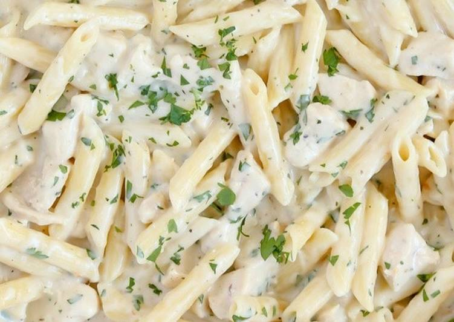

Coconut Chutney
Go back!

Ingredients:
Equal parts Coriander, green chilli, Fried grams (Bugda dal), coconut : 1/2 cup
Curry leaves: 8-10
A big pinch of hing
Salt as required
Little bit of Oil for cooking the Ingredients
Water as required
Method:
Step 1- Cooking raw Ingredients
Heat a saucepan / kadai.
Keep the flame to a low
and add some oil.
Step 2- Add Ingredients
Add hing
Add fried gram
Add green chilli
(heat these for few minutes on low flame)
Add coconut
Add curry leaves
Add Coriander
Step 3- Cook on low flame
Keep stirring for few minutes
Turn off flame when you see nice golden color on fried grams
Take out all Ingredients in a separate cup (big enough to hold everything after grinding)
Cool them down
Step 4- Grid to thick paste
Use mixer grinder at low setting
Pour all Ingredients in jar
Add salt
Run the grinder for 5-7 seconds
Open lid and mix things with spoon
Pour some water
Grind again for 10 sconds around
Open lid and mix things with spoon
Pour some more water
Keep doing this till you get needed consistency